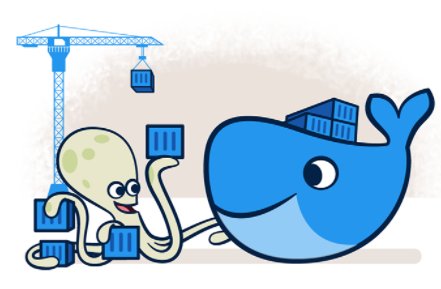

Accelerate how you build, share, and run modern applications.
- 13 million +developers
- 7 million +applications
- 13 billion +monthly image downloads
Docker makes development efficient and predictable
Docker takes away repetitive, mundane configuration tasks and is used throughout the development lifecycle for fast, easy and portable application development - desktop and cloud. Docker’s comprehensive end to end platform includes UIs, CLIs, APIs and security that are engineered to work together across the entire application delivery lifecycle.
Build
-
Get a head start on your coding by leveraging Docker images to efficiently develop your own unique applications on Windows and Mac. Create your multi -container application using Docker Compose.
-
Integrate with your favorite tools throughout your development pipeline - Docker works with all development tools you use including VS Code, CircleCI and GitHub.
-
Package applications as portable container images to run in any environment consistently from on-premises Kubernetes to AWS ECS, Azure ACI, Google GKE and more.

Share
-
Leverage Docker Trusted Content, including Docker Official Images and images from Docker Verified Publishers from the Docker Hub repository.
-
Innovate by collaborating with team members and other developers and by easily publishing images to Docker Hub.
-
Personalize developer access to images with roles based access control and get insights into activity history with Docker Hub Audit Logs.